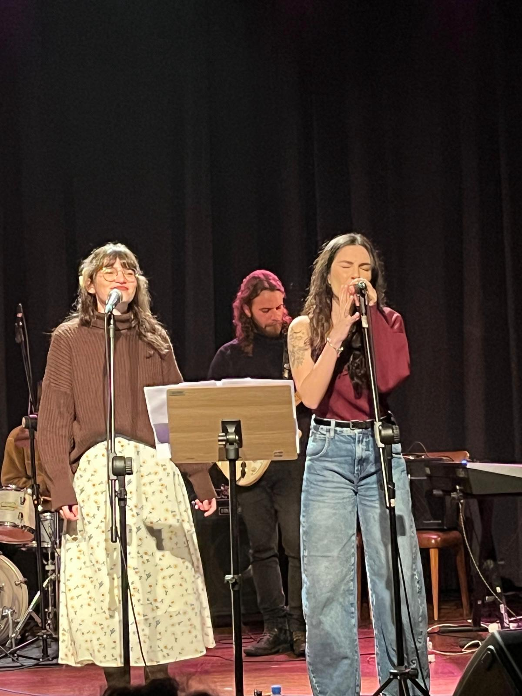

A Voz da Nova Geração
Quem é Mariê?
Nascida entre a calmaria do interior e as pulsações da metrópole, Mariê traz em seu DNA uma voz suave, mas firme, capaz de preencher espaços imensos. Misturando letras poéticas inspiradas nos grandes nomes da MPB clássica com beats urbanos e dinâmicos do pop contemporâneo, ela conquistou mais de 5 milhões de streamings em seu primeiro ano de carreira.
Suas canções tratam de conexões cotidianas, do mar, da pressa do tempo e dos recomeços. Com a turnê "Sopro", ela viaja pelo país entregando performances acústicas viscerais e momentos elétricos inesquecíveis.